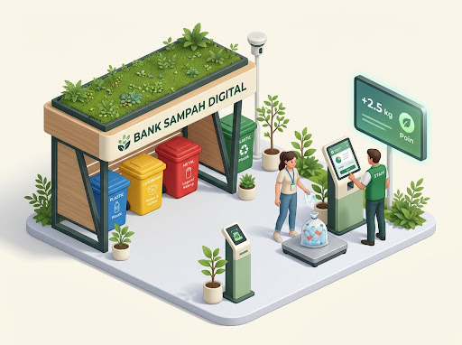
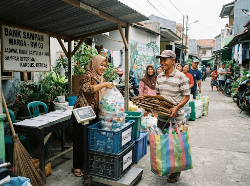
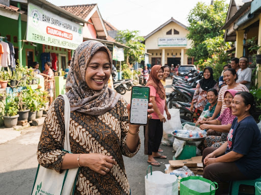
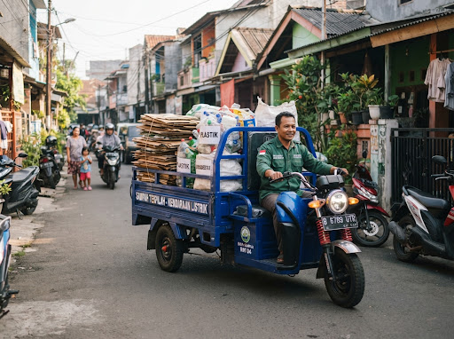
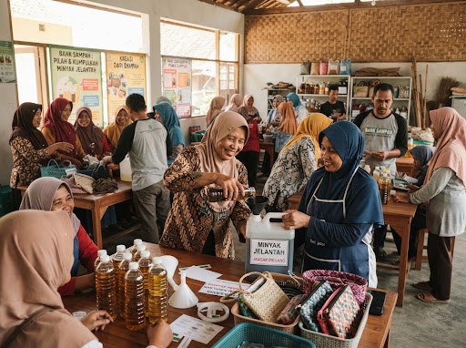

Ubah Sampah Jadi Berkah & Saldo Nyata Bersama ARUNA.
Platform bank sampah digital modern yang memudahkan warga memilah, menimbang presisi dengan IoT, dan menukarkan sampah anorganik menjadi saldo terverifikasi.

Kemurnian sortir di sumber
Langsung ke buku warga
“Mengubah timbulan sampah permukiman menjadi kemandirian ekonomi rukun warga yang terukur, transparan, dan terpercaya.”
Sampah terpilah industri daur ulang
Keluarga aktif menyetor berkala
Saldo dicairkan langsung ke warga
Reduksi emisi gas rumah kaca
Kalkulator Cuan Sampah Rumah Tangga
Hitung potensi penghasilan tabungan Anda dalam hitungan detik. Cukup pilih kategori sampah dan geser estimasi beratnya.
Estimasi dana langsung masuk ke saldo rekening nasabah:
*Harga acuan terintegrasi bursa daur ulang nasional. Bebas biaya penimbangan.
4 Langkah Mengubah Sampah Jadi Saldo
Sistem ARUNA dirancang transparan dan tanpa ribet, langsung dari depan pintu rumah Anda hingga dana masuk ke saldo rekening.
Pilah dari Rumah
Pisahkan botol plastik, kardus/karton, kaleng logam, dan jelantah dalam wadah terpisah dalam kondisi kering.
Drop Point / Jemput
Bawa ke bank sampah terdekat atau gunakan layanan penjemputan armada ARUNA gratis untuk kuota minimal 10 kg.
Sinkronisasi Otomatis
Data berat dan rupiah langsung masuk ke sistem cloud seketika. Notifikasi ringkasan langsung terkirim ke WhatsApp.
Tarik Saldo Bebas Biaya
Tarik saldo kapan saja ke rekening bank (BCA, Mandiri, BRI) atau e-wallet (GoPay, OVO, ShopeePay) tanpa potongan admin.
Daftar Sampah Diterima & Estimasi Harga
Pembaruan harga berkala mengikuti bursa material industri nasional untuk kepastian harga tertinggi.
Botol & Gelas Plastik
PET bening bersih, botol detergen HDPE, tutup galon, cup minuman tebal tanpa sisa cairan.
Tip: Lepaskan label & pipihkan botol.
Kardus & Kertas Arsip
Kardus cokelat tebal packing, kertas arsip HVS, koran lama, buku dan majalah bekas daur ulang.
Tip: Pastikan kering & ikat rapi.
Aluminium & Besi
Kaleng minuman ringan aluminium, kaleng biskuit/susu, perkakas besi tua, kawat tembaga kabel.
Tip: Bilas sisa cairan manis.
Used Cooking Oil (UCO)
Minyak goreng bekas pakai rumah tangga & resto untuk diolah menjadi green energy biodiesel.
Tip: Saring sisa remah makanan.
Mengapa Menabung Sampah di ARUNA?
Standar transparansi perbankan digital kami aplikasikan ke sistem daur ulang agar warga merasa aman, dihargai, dan terlindungi.
Harga Beli Adil & Stabil
Terkoneksi langsung dengan jaringan pabrik daur ulang resmi tanpa perantara calo, menjamin nasabah mendapatkan nilai tukar tertinggi.
IoT Timbangan Digital
Timbangan digital dengan sensor presisi 2 desimal yang sinkron langsung ke smartphone. Tidak ada manipulasi timbangan manual.
Buku Tabungan Online
Catatan mutasi saldo dan riwayat setoran tersimpan rapi selamanya layaknya mobile banking. Transparan dan dapat diunduh kapan saja.
Pemberdayaan RT/RW
Membantu operasional kas warga, arisan lingkungan, dan gerakan sedekah sampah untuk pemukiman asri dan guyub rukun.
Kata Mereka yang Telah Merasakan Manfaatnya
Dengarkan kisah warga, pegiat komunitas, dan pengurus rukun warga yang membuktikan sampah bisa menghasilkan berkah.
"Dulu botol plastik bekas minuman anak-anak cuma numpuk di garasi dan dibakar. Sejak ikut ARUNA, tiap bulan bisa cair Rp 150.000 ke saldo e-wallet. Lumayan banget buat nambah uang belanja sayur!"
Siti Wardah (42 th)
Ibu Rumah Tangga, Jakarta Timur
"Sistem timbangan digital ARUNA sangat transparan, warga tidak ada yang komplain soal berat. Kas operasional RW 06 kami sekarang surplus Rp 2,8 juta per bulan dari akumulasi sampah warga satu komplek."
Bambang Susanto (56 th)
Ketua RW 06, Tangerang Selatan
"Dashboard jejak karbon ARUNA sangat memotivasi generasi muda di kampus. Kami tahu persis pohon yang terselamatkan dari tiap kilo kertas laporan yang kami kumpulkan bersama."
Dian Fakhira (23 th)
Aktivis Lingkungan & Mahasiswi
Aktivitas Komunitas & Operasional ARUNA
Transparansi kerja nyata dari penimbangan di lingkungan warga, edukasi pemilahan berkala, hingga rantai logistik daur ulang terintegrasi.

Penimbangan Presisi Digital di RT 04
Warga bersama petugas loket menimbang kardus dan botol plastik secara terbuka. Data berat terhubung otomatis via Bluetooth ke smartphone nasabah.

Pencairan Saldo & Edukasi Pilah
Sosialisasi pemilahan material kering dan demonstrasi pencairan saldo instan ke dompet digital (GoPay & OVO) bagi ibu-ibu PKK.

Pengangkutan Logistik Berkelanjutan
Armada penjemputan ARUNA mengangkut lebih dari 1,4 ton anorganik terpilah dari bank unit pemukiman langsung ke fasilitas daur ulang rekanan.

Workshop Daur Ulang Mandiri
Pelatihan pengumpulan minyak jelantah (UCO) rumah tangga dan pembentukan manajemen bank sampah mandiri berbasis pengurus lingkungan rukun warga.
Pertanyaan yang Sering Diajukan
Pelajari seluk-beluk mekanisme registrasi, penimbangan, hingga pencairan saldo bank sampah digital ARUNA.
Bagaimana cara membuka rekening tabungan bank sampah di ARUNA?
expand_more
Pendaftaran akun ARUNA sepenuhnya gratis dan dapat diselesaikan dalam 2 menit. Anda cukup menekan tombol 'Gabung Nasabah', mengisi nama, nomor WhatsApp aktif, dan alamat domisili. Setelah verifikasi OTP, Anda langsung mendapatkan nomor ID Buku Rekening Digital (ARN-XXXX) dan dapat segera menyetor sampah ke drop point atau mengajukan penjemputan.
Apa saja jenis sampah yang diterima dan bagaimana kriteria pemilahannya?
expand_more
Kami menerima 4 kategori utama anorganik bernilai ekonomis: Plastik (botol PET, cup plastik, galon, botol detergen HDPE), Kertas & Karton (kardus tebal, duplex, kertas arsip, majalah), Logam & Kaleng (aluminium beverageware, besi tua, tembaga), serta Minyak Jelantah (Used Cooking Oil). Pastikan material dalam keadaan kering, bebas residu makanan basah, dan botol dipipihkan untuk optimalisasi volume.
Kapan dan bagaimana saldo tabungan sampah dapat dicairkan?
expand_more
Saldo masuk seketika (real-time) begitu proses penimbangan digital selesai diverifikasi. Anda dapat mencairkan saldo kapan pun tanpa periode penguncian minimum melalui dashboard web nasabah ke rekening bank (BCA, Mandiri, BRI, BNI) maupun dompet digital ternama (GoPay, OVO, ShopeePay, DANA) dengan 0% biaya potongan admin.
Apakah ada minimal berat setoran sampah untuk penjemputan ke rumah?
expand_more
Untuk penyerahan langsung ke Drop Point mitra RT/RW tidak ada batas minimum (mulai dari 1 kg diterima). Sedangkan untuk layanan penjemputan gratis armada kendaraan listrik/logistik ARUNA ke alamat rumah, kuota akumulasi minimum adalah 10 kg (bisa gabungan berbagai kategori jenis sampah).
Apakah pengurus RT/RW atau komunitas bisa mendaftarkan unit secara kolektif?
expand_more
Tentu bisa. Kami menyediakan skema Rekening Unit Komunitas (Kemitraan RT/RW & Perkantoran) lengkap dengan fasilitas peminjaman timbangan digital IoT ARUNA, dashboard pemantauan kas surplus warga, serta pendampingan edukasi pilah perdana oleh Duta ARUNA di wilayah Anda.
Punya pertanyaan lain seputar sistem ARUNA?
Tim layanan nasabah kami siap membantu Anda setiap Senin–Sabtu (08.00–17.00 WIB).
Siap Mengubah Sampah Menjadi Tabungan Masa Depan?
Bergabung bersama ribuan warga cerdas yang telah menikmati kemudahan setor sampah berinsentif rupiah. Bebas biaya pendaftaran seumur hidup.